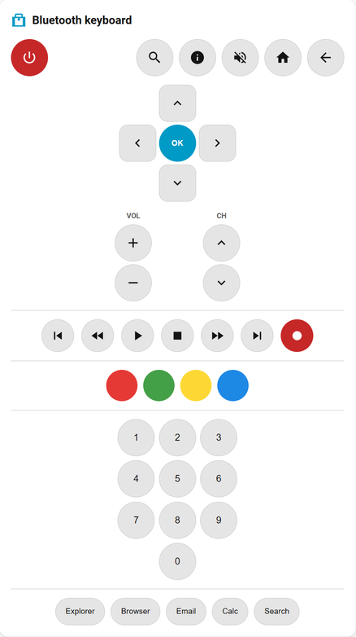
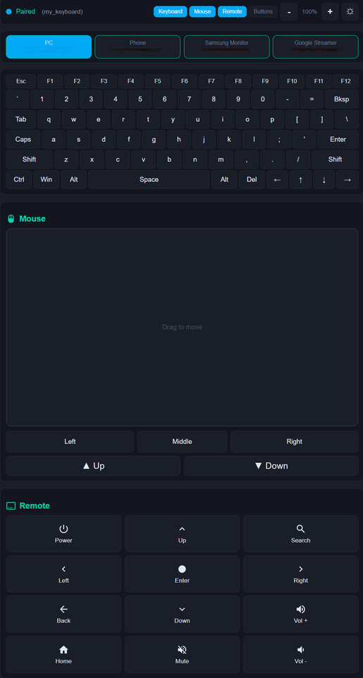

Features
Native BLE HID
Uses the ESP-IDF Bluedroid GATTS API directly. Recognised as a standard keyboard by Windows, Android, and iOS. Full HOGP-compliant BLE HID with Device Information and Battery services.
Secure Pairing
Optional 6-digit static passkey (PIN) for secure bonding. For fastest pairing, use Just Works (no passkey). With passkey, use passkey_mode: legacy for Windows. For iOS, use passkey_mode: secure_connections (required). Android uses Just Works only.
Key Combos
Send any modifier + key combination using hex keycodes. Win+R, Ctrl+C, Alt+F4 and more.
Power Commands
Native HID sleep, hibernate and shutdown — clean OS-level signals, no Run dialog or lingering key state.
Media Keys
Volume up/down, mute, play/pause, next/prev track and stop via HID consumer control reports.
Home Assistant
Each button appears as an entity in Home Assistant. Trigger from automations, dashboards or scripts. Direct API implementation.
Pairing State Sensor
Optional binary sensor turns on after a successful GAP pairing event and turns off on disconnect/unpair.
Custom Text Input
Type any text in Home Assistant and send it directly to the paired host device. Drive it manually or from automations.
Mouse Control
Left, right and middle click, relative movement, and scroll wheel via HID mouse reports — plus absolute positioning to move the cursor to an exact spot. Drive from buttons or automations.
HA Keyboard Card
Full on-screen QWERTY keyboard card for Home Assistant. Sticky modifiers, Caps Lock, F-keys, and arrow keys.

HA Mouse Card
Custom Lovelace card with a touchpad, 3 mouse buttons, and scroll controls. Drag to move cursor, wheel to scroll.

HA Remote Card
Home Assistant remote control card with D-pad, media controls, and app shortcuts. Control media and navigation from your dashboard.

Web Control
Built-in web page with full keyboard, mouse, and remote UI. Access from any browser — no Home Assistant needed. Enable with web_control: true.

Multi-Host Switching
Pair with up to 10 hosts and switch between them with a button press. Uses directed advertising for fast reconnection. Slots persist across reboots.
Keyboard Layouts
Pick us, uk, or de (German QWERTZ) in YAML and switch live from the web UI (persisted to NVS). Bind a layout per host slot so switching hosts also switches layout. UK adds £ ¬ €; DE adds ä ö ü ß € § ° via UTF-8 (dead keys auto-composed). The architecture supports more layouts with three small additions per language.
Web Macros
Create, edit, and delete macro keys directly from the web UI — no reflash needed. Macros support multi-step commands separated by | with optional delay:N timing. Persist in NVS across reboots.
Quick Start
external_components: - source: type: git url: https://github.com/markusg1234/ESPHome-espidf_ble_keyboard ref: main components: [ espidf_ble_keyboard ] espidf_ble_keyboard: id: my_keyboard device_name: "ESP32 BLE KB" # optional, max 29 chars key_delay_ms: 80 # optional, increase if characters drop passkey: 123456 # optional 6-digit PIN passkey_mode: legacy # use secure_connections for iOS (required) web_control: true # optional, built-in web UI host_slots: 4 # optional, multi-host switching (1–10) mouse_sensitivity: 1.0 # optional, web mouse base speed (default: 1.0) mouse_acceleration: 0.15 # optional, web mouse accel factor (default: 0.15) mouse_max_speed: 4.0 # optional, web mouse max sensitivity (default: 4.0) scroll_sensitivity: 2.0 # optional, web mouse scroll speed (default: 2.0) keyboard_layout: us # optional, us | uk | de — must match host PC layout (default: us) custom_text_id: # optional, link text entities for Send buttons - custom_text button: - platform: espidf_ble_keyboard keyboard_id: my_keyboard name: "Win + R" action: "combo:0x08:0x15" - platform: espidf_ble_keyboard keyboard_id: my_keyboard name: "Shutdown PC" action: "shutdown"
Pairing State Sensor
binary_sensor: - platform: espidf_ble_keyboard keyboard_id: my_keyboard name: "BLE Keyboard Paired" # ON = GAP pairing completed successfully on current connection # OFF = disconnected/unpaired, or no successful pairing yet in this session
Sensors
sensor: # RSSI — signal strength of connected host - platform: espidf_ble_keyboard keyboard_id: my_keyboard name: "BLE Host RSSI" update_interval: 10s # Active Host — publishes current host slot (0-based) # Required for keyboard card host switcher to stay in sync - platform: espidf_ble_keyboard keyboard_id: my_keyboard type: active_host name: "BLE Keyboard Active Host"
Built-in Actions
| Action | Description |
|---|---|
"Hello\n" | Type a string. Printable ASCII supported on every layout; non-ASCII (e.g. £ ¬ € on UK, ä ö ü ß on DE) works via UTF-8 when the active layout exposes it. Use \n for Enter. |
"combo:0x08:0x15" | Key combo — modifier + keycode in hex. Use 0x00 as modifier for a plain keypress. See keycode reference. |
type: combo | Dict format alternative — type: combo, modifier: 0x01, key: 0x04. More readable for complex actions. |
type: consumer | Dict format for consumer codes — type: consumer, code: 0x0192. |
"ctrl_alt_del" | Send Ctrl+Alt+Del secure login sequence. |
"sleep" | HID System Sleep signal — clean OS-level sleep. |
"hibernate" | Hibernate via Run dialog — saves to disk, full power off. |
"shutdown" | HID System Power Down signal — clean OS-level shutdown (Windows). |
"power" | HID power button — triggers the host device power button action (Windows). |
"mute" | Toggle mute. |
"volume_up" | Volume up. |
"volume_down" | Volume down. |
"play_pause" | Play / pause media. |
"next_track" | Skip to next track. |
"prev_track" | Previous track. |
"stop" | Stop media playback. |
"consumer:0x0192" | Send any HID consumer control code — open apps, control brightness and more. See keycode reference. |
"left_click" | Mouse left click. |
"right_click" | Mouse right click. |
"middle_click" | Mouse middle click. |
"mouse_move:50:0" | Move mouse cursor — relative X:Y pixels (-127 to 127). |
"mouse_scroll:3" | Scroll mouse wheel — positive = up, negative = down (-127 to 127). |
type: mouse_click | Dict format — type: mouse_click, buttons: 0x01. 0x01=left, 0x02=right, 0x04=middle. |
"mouse_abs:50:50" | Move cursor to an exact position — percent of screen (0–100). mouse_abs:50:50 = center. |
"mouse_abs_px:1280:720" | Move cursor to an exact position in pixels (uses screen_width/screen_height). |
"mouse_abs_mon:1:50:50" | Move cursor to a percent within declared monitors[1] (multi-monitor). |
"mouse_abs_save" / "mouse_abs_restore" | Remember the current absolute position and jump back to it later. |
"mouse_goto:4394:42" | Move to a Windows virtual-desktop pixel across all monitors (homes absolute to 0,0 then steps relatively). X/Y = Windows coords (primary top-left = 0,0; negatives allowed) — what Power Automate reports. Use when the absolute pointer is stuck on the primary monitor; needs pointer acceleration off + 1:1 speed. |
"send_custom_text" | Send linked text entity content. Use send_custom_text:N for multiple entities. Requires custom_text_id in config. |
"switch_host:0" | Switch to host slot 0–9. Reconnects to stored host or advertises for new pairing. |
"forget_host:0" | Remove BLE bond for host slot 0–9 and clear the stored address. |
"string:hello" | Explicit text typing — useful in multi-step macros to distinguish text from action names. |
"delay:200" | Pause for N milliseconds (max 10000). Used between steps in multi-step macros. |
"a | b | c" | Multi-step macro — chain actions with |. 50ms auto-delay between steps. E.g. "combo:2:6 | delay:100 | combo:2:25" (Copy, wait, Paste). |
execute_action() | Run any action string from a lambda — id(kb).execute_action("combo:2:6 | delay:100 | combo:2:25");. Supports multi-step. |
execute_macro(N) | Run a web-defined macro by index — id(kb).execute_macro(0);. Index shown in web UI as [0], [1], etc. |
run_macro / run_action | Expose macros to Home Assistant: add api: services that call execute_macro(index) / execute_action(action), then call esphome.<device>_run_macro (data: index) or _run_action (data: action) from HA. Web macros aren't individual HA entities (created at runtime); use these services or a button: entry for a named entity. |
Home Assistant Cards
type: custom:ble-mouse-card device: bluetooth_keyboard name: Mouse Control # optional card title sensitivity: 1.5 # optional cursor speed (default: 1.5) mouse_acceleration: 0.15 # optional acceleration factor (default: 0.15) mouse_max_speed: 4.5 # optional max sensitivity cap (default: 4.5) scroll_sensitivity: 2 # optional scroll speed (default: 2) tap_to_click: true # optional tap = left click (default: true)
type: custom:ble-keyboard-card device: bluetooth_keyboard name: BLE Keyboard # optional card title show_fkeys: true # optional show F1-F12 row (default: true) host_slots: 4 # optional host switcher (default: 0 = hidden) host_names: # optional custom names per slot - TV - Phone
type: custom:ble-remote-card device: bluetooth_keyboard name: Media Remote # optional card title (auto from HA if omitted) show_numpad: true # optional number pad (default: false) show_apps: true # optional app launch row (default: true) show_color: true # optional color buttons (default: false)
api: services: # Mouse card services - service: mouse_move variables: x: int y: int then: - lambda: |- id(my_keyboard).send_mouse_move(x, y); - service: mouse_scroll variables: amount: int then: - lambda: |- id(my_keyboard).send_mouse_scroll(amount); - service: mouse_click variables: btn: int then: - lambda: |- id(my_keyboard).send_mouse_click(btn); - service: mouse_abs # move cursor to exact position, % of screen variables: x: float y: float then: - lambda: |- id(my_keyboard).execute_action("mouse_abs:" + to_string(x) + ":" + to_string(y)); # Keyboard card services - service: send_string variables: keys: string then: - lambda: |- id(my_keyboard).send_string(keys); - service: send_key variables: modifier: int keycode: int then: - lambda: |- id(my_keyboard).send_key_combo(modifier, keycode); # Remote card service - service: send_consumer variables: code: int then: - lambda: |- id(my_keyboard).send_consumer(code); # Host switching service - service: switch_host variables: slot: int then: - lambda: |- id(my_keyboard).switch_host(slot);